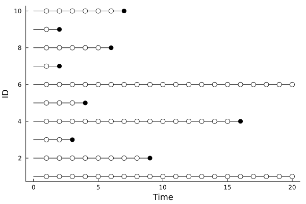

Cox model
cd("docs/src/examples/fig/")
using Random, LSurvival, Distributions, LinearAlgebra, Plots
# generate some data under a discrete hazards model
id, int, out, data = LSurvival.dgm(MersenneTwister(1212), 100, 20)
data[:, 1] = round.(data[:, 1], digits = 3)
d, X = data[:, 4], data[:, 1:3]
wt = rand(length(d)) # random weights just to demonstrate usage
# Fit a Cox model with `Tables.jl` and `StatsAPI.@formula` interface (similar to GLM.jl)
tab = (id=id, in = int, out = out, d=d, x=X[:,1], z1=X[:,2], z2=X[:,3]) # can also be a DataFrame from DataFrames.jl
mfit = coxph(@formula(Surv(in, out, d)~x+z1+z2), tab, ties = "efron", wts = wt, id = ID.(tab.id))Output:
Maximum partial likelihood estimates (alpha=0.05):
─────────────────────────────────────────────────────────
ln(HR) StdErr LCI UCI Z P(>|Z|)
─────────────────────────────────────────────────────────
x 1.60222 0.530118 0.563208 2.64123 3.02 0.0025
z1 0.305929 0.43838 -0.55328 1.16514 0.70 0.4853
z2 1.98011 0.325314 1.34251 2.61771 6.09 <1e-08
─────────────────────────────────────────────────────────
Partial log-likelihood (null): -150.162
Partial log-likelihood (fitted): -131.512
LRT p-value (X^2=37.3, df=3): 3.9773e-08
Newton-Raphson iterations: 5Plot survival outcomes (person-period plot)
plot(mfit.R)
savefig("ppplot.svg")
Plot baseline hazard
basehazplot(mfit)
savefig("basehaz.svg")
Plot Schoenfeld residuals
coxdx(mfit)
savefig("schoenfeld.svg")
Plot Jackknife/dfbeta residuals to show influence
coxinfluence(mfit, type="jackknife", par=1)
coxinfluence!(mfit, type="dfbeta", color=:red, par=1)
savefig("influence.svg")
Competing event analysis: Cox-model-based estimator of the cumulative risk/survival function
using Random, LSurvival, Distributions, LinearAlgebra
# simulate some data
z, x, t, d, event, wt = LSurvival.dgm_comprisk(MersenneTwister(122), 1000)
X = hcat(x,z)
enter = t .* rand(length(d))*0.02 # create some fake entry timesusing DataFrames with LSurvival
using DataFrames
df = DataFrame("x"=>x[:,1],"z"=>z[:,1],"t"=>t,"enter"=>enter,"event"=>event,"wt"=>wt)Cox-model estimator: cause-specific risks at given levels of covariates
fit1 = coxph(@formula(Surv(enter, t, event==1)~x+z), df, wts=df.wt)
n2idx = findall(event .!= 1)
fit2 = coxph(@formula(Surv(enter, t, event==2)~x+z), df[n2idx,:], wts=df.wt[n2idx])
# risk at referent levels of `x` and `z` (can be very extreme if referent levels are unlikely/unobservable)
res_cph_ref = risk_from_coxphmodels([fit1,fit2])
# risk at average levels of `x` and `z`
mnx = sum(x)/length(x)
mnz = sum(z)/length(z)
res_cph = risk_from_coxphmodels([fit1,fit2], coef_vectors=[coef(fit1), coef(fit2)], pred_profile=mean(X, dims=1))plot(res_cph)
savefig("risk-multicox.svg")
Contrast with risk at the referent levels of x and z
res_cph_ref = risk_from_coxphmodels([fit1,fit2], coef_vectors=[coef(fit1), coef(fit2)], pred_profile=[0.0, 0.0])
plot(res_cph_ref)
savefig("risk-multicox2.svg")